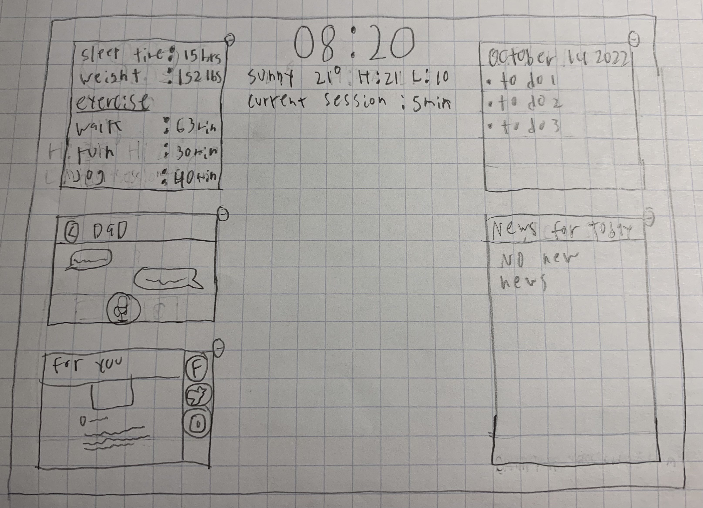

The goal of this project is to design a mirror that functions as a smart device. We are to apply techniques and principals of design that we have learned in the class to create a functional and appealing design.
Included below is the sketch of the original design which the final design is based off of. I made the design symetrical on the sides, and keep the boxes on equal level, keeping them a regular size and tidy. I included boxes for each of the sections to distinguish them from the background in the mirror as well as to draw attention to the diferent sections.
Included is the personalized calendar, a news feed, the weather, the time, the current mirror session, the sleep amount, current weight, and list of exercises.
Below is the working version of the mirror. I implemented all the features mentioned in the sketch except this version has some tweaks with the desigh of the UI, such as in the changes to the social media menu. The information for health, weather, news, calendar, all come from JSON files. The time comes from functions built in to Javascript. The mirror displays all the menus on top of a camera display that shows the user to simulate a mirror.
An advanced feature that I implemented is for the user to be able to minimize the menus being displayed. Clicking the minimize button at the top corner of each of the menus causes them to go away and appear as an icon at the bottom of the mirror. This icon can be clicked and the menu will reappear back where it was originally.